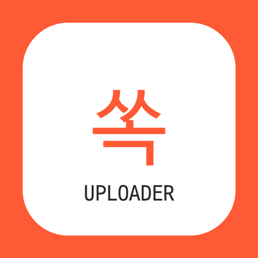

← Ssok Uploader home

Ssok Uploader
Ssok Uploader is a private desktop tool used by its owner to publish content she creates (news cards for 쏙뉴스 and shopping short videos for 맘에쏙) to her own TikTok accounts. Last updated: October 16, 2026.
Terms of Service · Privacy Policy
Terms of Service
- Ssok Uploader runs only on its owner's computer and is not offered to the public.
- It posts photos, videos and captions created by the owner to the owner's own TikTok accounts, only when the owner presses the post button.
- Before every post the owner reviews the content, edits the caption, and chooses the privacy level, interaction settings (comment, duet, stitch) and commercial content disclosure.
- Use of TikTok through this tool follows TikTok's Terms of Service, Community Guidelines, Music Usage Confirmation and Branded Content Policy.
- The tool is provided as is, without warranty.
Privacy Policy
- What is stored: the TikTok access token and basic profile (open ID, display name) of the owner's own accounts, saved only in a local file on the owner's computer.
- What is sent: only the photos, video files and captions the owner chooses, sent to TikTok's API. Photos for photo posts are temporarily hosted on this site so TikTok can fetch them, and are removed after a few days.
- Not collected: no data about other TikTok users, no analytics, no advertising, and no sharing or selling of data.
- Deleting data: delete the local token file, or revoke access in the TikTok app: Settings and privacy → Security → Apps and websites.